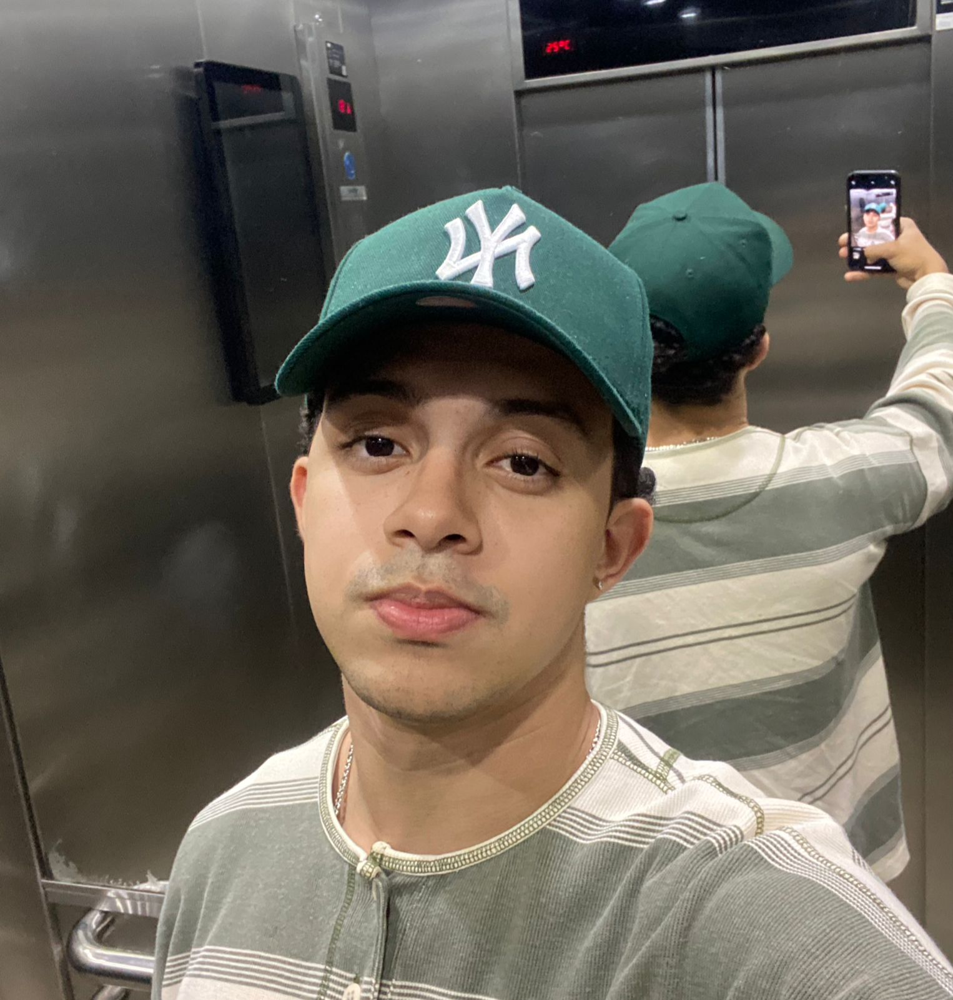

CURRÍCULO PROFISSIONAL
Bruno Garcia Carvalho 
Informações e Redes Sociais 📱

Objetivo Profissional ✅
Sou estudante de Engenharia da Computação pela UNISANTA (Universidade Santa Cecília) no momento em busca do meu primeiro estágio,
buscando sempre conhecimento para aprimorar meus projetos, desenvolvimento profissional e pessoal no geral e sempre sendo proativo em relação às tarefas ordenadas a mim,
busco sempre ser uma pessoa comunicativa e sociável no geral, buscando trabalhar em grupo e disposto a sempre agregar a equipe num todo.
No futuro, espero estar com um grande conhecimento em tecnologia no geral, e sendo um ótimo profissional na área que atuo, sempre buscando inovações e formas criativas de solucionar problemas.
Na questão da empresa, estou disposto a sempre estar atuando para tal, sempre sendo responsável e competente com minhas.
Formação Acadêmica 🎓
- Ensino-Médio Completo
- Cursando o 4º semestre de Engenharia da Computação na UNISANTA
Experiência Profissional ⚙️
Sem experiências profissionais na área.
Habilidades 📋
- Intermediário de SQL
- Básico de Python
- Básico de C++
- Básico/Intermediário de Arduino
- Intermediário de Power BI
- Inglês Intermediário/Avançado